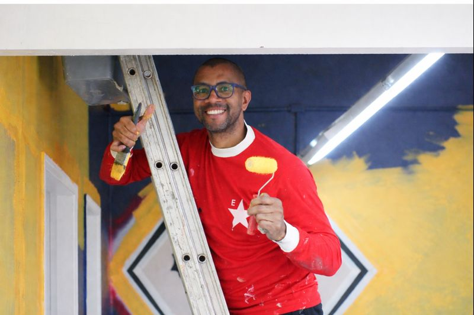
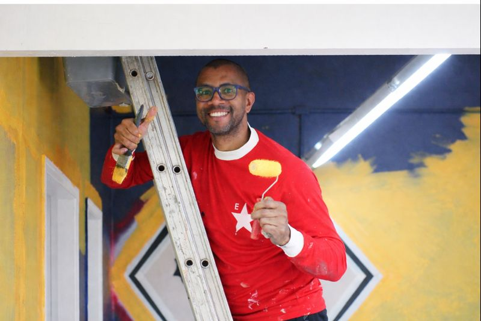

APM
A APM, Associação de Pais e Mestres, tá presente em muitas ETECs, mas a nossa é motivo de MUITO orgulho! Totalmente voluntária, ela é formada por mães e pais incríveis que dedicam tempo, energia e muito carinho para apoiar a escola e, principalmente, a gente, os alunos. Grande parte dos eventos da ETESP só acontece graças à dedicação da APM. A tradicional e tão esperada festa julina é organizada inteiramente por elas. Não é à toa que é sempre um sucesso! Além das festas, os mutirões organizados pela APM junto com voluntários ajudam a melhorar a estrutura da escola e a fortalecer parcerias, fazendo uma diferença enorme no nosso dia a dia. Elas são o braço direito da escola e o porto seguro dos alunos, ajudando com materiais, arrecadações pra melhorias, resolvendo questões e estando por perto sempre que precisamos. As nossas queridas “tias” têm um contato próximo com a gente e um papel essencial no nosso ciclo na escola. Sem elas, não teríamos muitas coisas que fazem da gente uma escola especial. Agradecemos, e muito, por termos pessoas tão importantes por perto!